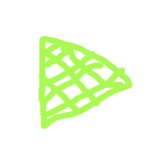
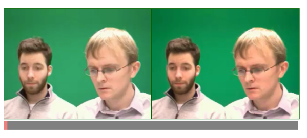

Mirror, mirror on the screen
In this task you will use the Canvas API to draw video frames from the <video> element into the <canvas> 2D graphics context.
Your goal is to:
- Draw a snapshot of the video on the left into the Canvas on the right every time the user clicks pause
- Then find a way to draw the live video into the Canvas. You need to draw the video on all frames
- Google hint: requestAnimationFrame
Click play and pause below a few times. What is happening? Can you find the code and change it so that it does the above?
Sources for this task is found in the folder mirror

The result should like something like this:
